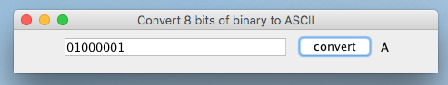

Binary Converter
We are going to make a translator that converts binary numbers to their equivalent ASCII characters.
Make a UI that looks something like this:

You will need a JFrame and a JPanel. The input field will be a JTextField, the output can be a JLabel as it is only used for display.
Make the text field nice and big, ex. JTextField answer = new JTextField(20);
You will also need to add an action listener to the JButton so you know when to do the conversion.
Here is a method that will convert a String of binary digits to a String containing the equivalent ASCII character.
String convert(String input) {
if(input.length() != 8){
JOptionPane.showMessageDialog(null, "Enter 8 bits, silly!!!");
return "-";
}
String binary = "[0-1]+";//must contain numbers in the given range
if (!input.matches(binary)) {
JOptionPane.showMessageDialog(null, "Binary can only contain 1s or 0s, silly!!!");
return "-";
}
try {
int asciiValue = Integer.parseInt(input, 2);
char theLetter = (char) asciiValue;
return "" + theLetter;
} catch (Exception e) {
JOptionPane.showMessageDialog(null, "Enter a binary, silly!!!");
return "-";
}
}